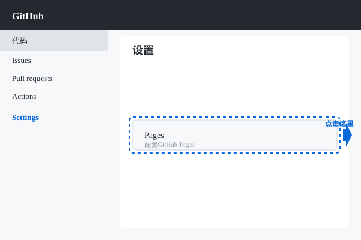

12. GitHub Pages
🌐
GitHub Pages可以让你的静态网站免费托管在GitHub上！
什么是GitHub Pages？
GitHub Pages是GitHub提供的免费静态网站托管服务，你可以：
- 部署HTML/CSS/JS网站
- 使用自定义域名
- 自动HTTPS加密
- 与代码仓库同步
开启GitHub Pages

在仓库Settings中找到Pages选项
- 进入仓库的Settings
- 找到Pages选项
- 选择Source（通常是main分支）
- 点击Save
访问你的网站
# 访问地址格式
https://用户名.github.io/仓库名/
# 例如
https://mrifox.github.io/my-website/
💡 如果仓库名和用户名相同（如username.github.io），可以直接访问 https://用户名.github.io/
自动部署
每次推送到main分支，GitHub Pages会自动重新部署你的网站。